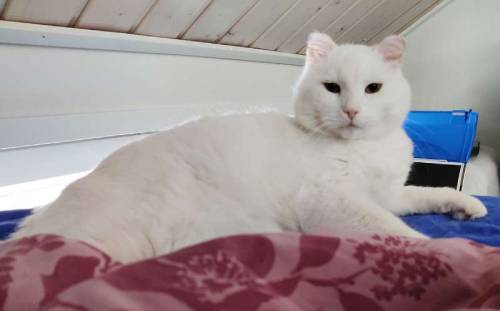

Jokaisen kotikissan kaulaan tulisi Amsterdamissa pian laittaa kilikello
Kaulaan laitettavilla kelloilla suojeltaisiin pikkulintuja.
Amsterdamilainen kissa tarkasteli näkymiä kotinsa ikkunasta syyskuussa 2022. Kuva: Karen Focht / Zuma
Heikki Aittokoski HS5.1. 19:25
AMSTERDAMIN kaupunki aikoo virallisesti pyytää kotikissojen omistajia laittamaan lemmikkiensä kaulaan kilikellon, kertovat hollantilaislehdet Het Parool ja Dutch News.
Ehdotus sisältyy Amsterdamin toimintasuunnitelmaan, jolla halutaan pitää kaupunki ”eläinystävällisenä”. Viranomaisten mukaan kissat ovat harvoja eläimiä, jotka saavat liikkua kaupungissa vapaasti.
Kilikellojen tarkoituksena olisi suojella pikkulintuja, jotka kellon äänen kuullessaan tietäisivät varoa saalistajaa.
HET PAROOL kertoo, että Alankomaissa on noin kolme miljoonaa koti- ja kulkukissaa, joiden saaliiksi joutuu tutkijoiden mukaan arviolta 18 miljoonaa lintua vuosittain.
Amsterdam on Alankomaiden eli epävirallisemmin Hollannin suurin kaupunki. Maan muissa kaupungeissa tai kunnissa vastaavaa kilikellosuositusta ei ole annettu.